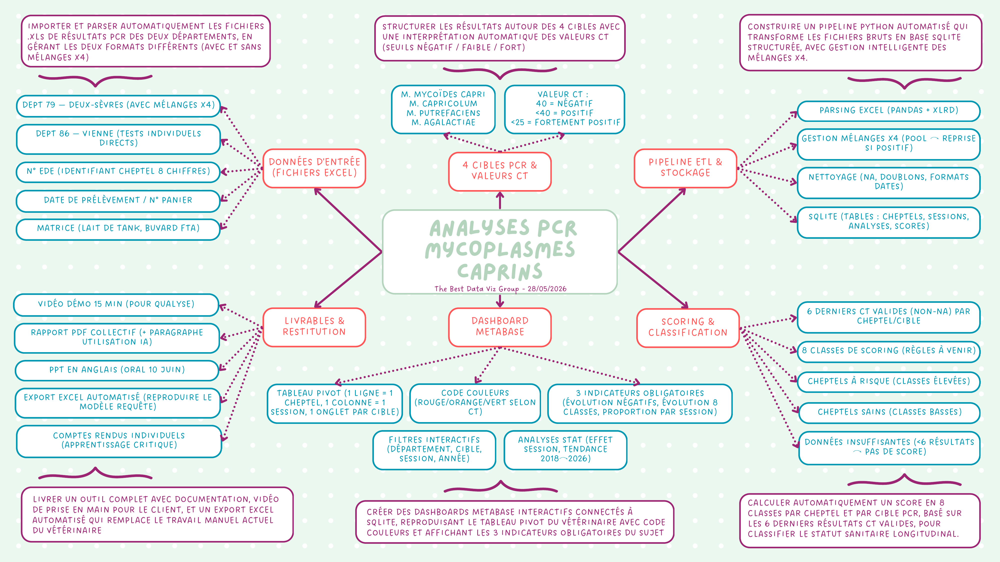
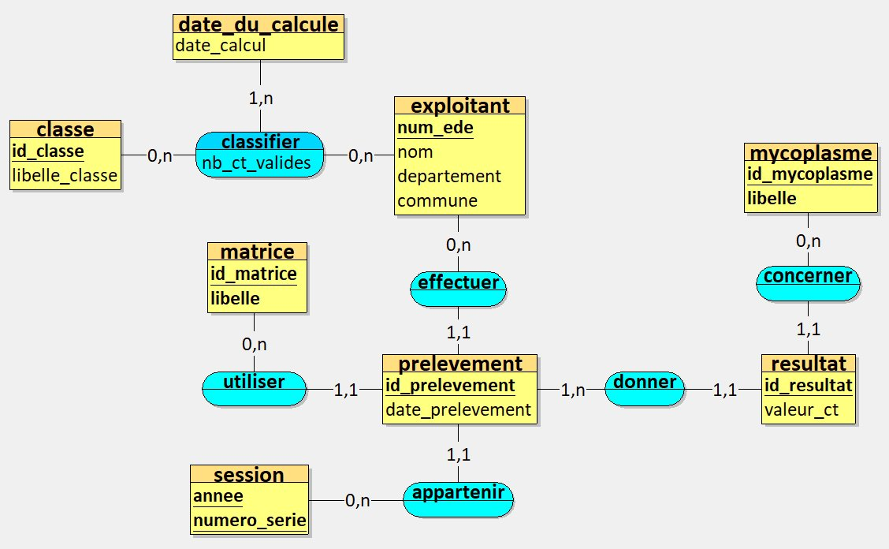

Suivi des analyses PCR de mycoplasmes caprins · Laboratoire Qualyse
SAÉ intégrative du semestre, mobilisant simultanément les trois compétences du BUT : traiter, analyser et valoriser. CapriTrack est un outil dynamique conçu pour le Laboratoire Qualyse (analyses PCR sur cheptels caprins des Deux-Sèvres et de la Vienne, 2018–2026), capable de transformer des fichiers de résultats bruts en un tableau de bord complet : import, pipeline ETL, base SQLite, scoring sanitaire, datavisualisation et restitution. Réalisé en équipe de quatre, où j’ai été Scrum Master et porteuse de la compréhension du besoin, de l’ergonomie et de l’identité visuelle.
Année
2025 – 2026 (S2)
Date de rendu
Juin 2026
Cadre
Équipe de 4 · Scrum Master
Livrables
Application Streamlit, base SQLite, rapport, vidéo, oral (EN)
Outils
SAÉ
Analyse de données, reporting et datavisualisation
CapriTrack est né d’une commande du Laboratoire Qualyse, laboratoire public d’analyses sanitaires implanté près de Niort, qui réalise depuis 2018 des analyses PCR de recherche de mycoplasmes sur des cheptels caprins des Deux-Sèvres (79) et de la Vienne (86). Le commanditaire, M. Treilles, nous a confié la conception d’un outil dynamique capable de transformer ses fichiers de résultats bruts en un véritable tableau de bord de suivi, d’analyse et de restitution, ouvert à l’intégration de nouvelles sessions de dépistage.
L’outil porte sur quatre cibles PCR : les trois sous-familles de Mycoïdes (capri, capricolum, putrefaciens) et Agalactiae. Chaque résultat est porté par une valeur Ct dont l’interprétation est automatisée. Le projet a été mené en équipe de quatre, aux côtés de Louis, Mathéo et Arthur, selon une méthode SCRUM imposée où j’ai tenu le rôle de Scrum Master. En tant que SAÉ intégrative, elle mobilise les trois compétences de la formation et m’a confrontée à toutes les étapes d’un projet en science des données, jusqu’aux enjeux de confidentialité.
En tant que Scrum Master, j’ai organisé le découpage du projet en sprints et le suivi quotidien de l’équipe. Les fonctionnalités ont été formalisées en user stories, priorisées par la méthode MoSCoW et suivies dans un tableau Kanban sous Trello, du Product Backlog jusqu’au Done. J’ai aussi réalisé un brainstorming pour cartographier l’ensemble du besoin (données d’entrée, pipeline, règles de scoring, livrables) afin de garder le cap sur ce qui serait réellement utile au laboratoire.

L’une des difficultés techniques tenait à l’hétérogénéité des fichiers sources : le 79 fournit des résultats sous forme de mélanges « x4 » (un pool de quatre échantillons, repris individuellement en cas de positivité), tandis que le 86 transmet des tests individuels directs. J’ai participé à la mise en place du parsing et du nettoyage des données (valeurs manquantes, doublons, formats de dates) avant chargement dans la base SQLite. En amont, un modèle conceptuel de données (Looping) a structuré la base au plus près du besoin du vétérinaire.

À partir des valeurs Ct, l’outil interprète automatiquement chaque résultat selon des seuils métier, puis calcule un score sanitaire longitudinal en huit classes (de A à I) à partir des six derniers résultats valides d’un cheptel, dans la limite des trois dernières années. Un cheptel ne disposant pas d’assez de tests n’est pas classifié.
Développé sous Streamlit et Plotly, le tableau de bord est pensé pour des utilisateurs non-statisticiens : les indicateurs les plus complexes ont été écartés au profit de représentations simples. Je me suis particulièrement investie dans l’ergonomie et l’identité visuelle, en reprenant les codes graphiques du site de Qualyse pour que l’outil prolonge l’univers du laboratoire. L’application s’organise en quatre sous-onglets (tableau pivot, positivité & négativité, classification sanitaire, cartographie), complétés par des filtres, des tris, des exports et une sauvegarde de la base. Une vidéo accompagne le livrable, et la restitution finale s’est faite à l’oral en anglais.
Vue d’ensemble de l’application livrée : prise en main, tableau pivot, indicateurs de positivité, classification sanitaire, cartographie et sauvegarde de la base.
SAÉ intégrative : elle mobilise simultanément les trois compétences du BUT Science des Données.
Apprentissages critiques · Compétence 1 – Traiter
Apprentissages critiques · Compétence 2 – Analyser
Apprentissages critiques · Compétence 3 – Valoriser
Ressources mobilisées
Compétences techniques
Le département des Deux-Sèvres (79) transmet ses résultats sous forme de mélanges « x4 » : un même test regroupe quatre échantillons, qui ne sont repris individuellement qu’en cas de positivité. Reconstituer automatiquement cette logique dans le pipeline s’est révélé bien plus complexe que prévu, pour un gain limité au regard du temps disponible. Nous avons donc fait le choix, assumé, de laisser cette gestion de côté afin de concentrer nos efforts sur les fonctionnalités à plus forte valeur pour le laboratoire.
La plus grande difficulté n’a pas été technique, mais métier. Le domaine vétérinaire comportait de nombreuses dimensions qui nous étaient totalement inconnues, et il nous a fallu, à plusieurs reprises, revenir en arrière faute d’avoir bien compris certains aspects : la façon dont la classe sanitaire d’un cheptel est déterminée, le fait que le résultat d’une cible se répercute parfois sur trois autres (les sous-familles de Mycoïdes lorsque seules deux bactéries sont testées), et bien d’autres règles que nous découvrions au fur et à mesure. Il a fallu progressivement nous approprier ce contexte métier pour que l’outil soit juste, et ce manque de repères a parfois limité notre capacité à interpréter finement certains résultats.
Le projet a été volontairement ambitieux : nous avons choisi des technologies que nous ne maîtrisions pas, notamment SQLite, Streamlit et Metabase. Je me suis formée seule à ces outils pendant la SAÉ. J’ai beaucoup aimé cette part d’auto-apprentissage, même si elle a imposé un rythme soutenu. Faute de temps, le tableau de bord Metabase initialement envisagé a finalement été abandonné.
Ne disposant pas des coordonnées exactes des cheptels, ceux-ci sont positionnés au chef-lieu de leur commune. Cela explique certains résultats visuellement surprenants, comme un cheptel apparaissant au centre-ville de Poitiers, et constitue une piste d’amélioration pour une future version.
Cette SAÉ m’a fait parcourir, pour la première fois, l’intégralité de la chaîne d’un projet en science des données : de l’extraction et de la préparation des données jusqu’au tableau de bord et à la restitution, en passant par la modélisation et le stockage. J’ai consolidé des savoir-faire concrets : structurer une base SQLite à partir d’un MCD adapté au besoin métier, automatiser un pipeline ETL gérant des sources hétérogènes, concevoir un tableau de bord ergonomique et une identité visuelle cohérente, mener une analyse exploratoire argumentée, et piloter un projet en méthode SCRUM.
Cette SAÉ a sans doute marqué un tournant dans ma formation : la donnée a vraiment pris du sens pour moi. Le contexte médical m’a séduite et je m’identifie peut-être davantage à cette voie. Comme je l’ai écrit dans mon compte rendu individuel, c’est avant tout la compréhension du besoin qui m’anime : me mettre à la place de l’utilisateur, interpréter sa demande, parfois l’anticiper. J’ai aussi adoré l’autonomie de l’auto-apprentissage, et je trouve très stimulant de rendre une analyse réellement utile aux décisions du vétérinaire. Enfin, la restitution en anglais reste un exercice que j’apprécie particulièrement, car la dimension internationale m’attire beaucoup.
Avec le recul, je chercherais à utiliser l’intelligence artificielle de manière plus structurée, en privilégiant son rôle d’assistante à l’apprentissage et à la réflexion plutôt que de simple outil de production. J’aimerais aussi intégrer le tableau de bord Metabase que nous avions envisagé, et améliorer la géolocalisation des cheptels pour gagner en précision cartographique. Autant de perspectives qui prolongeraient naturellement CapriTrack.